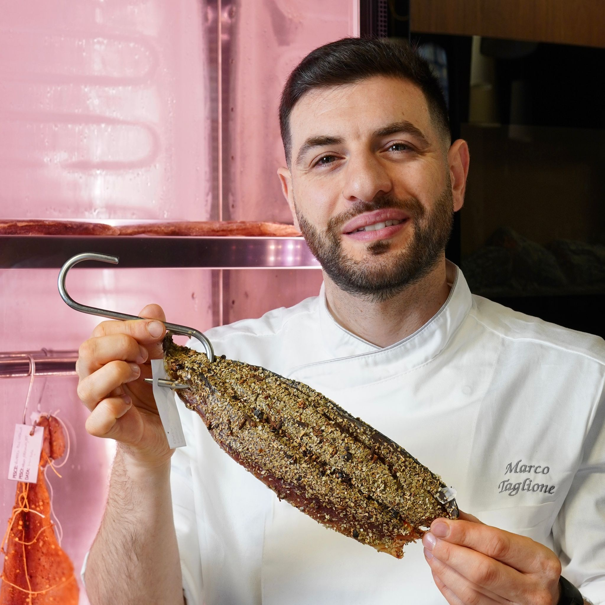
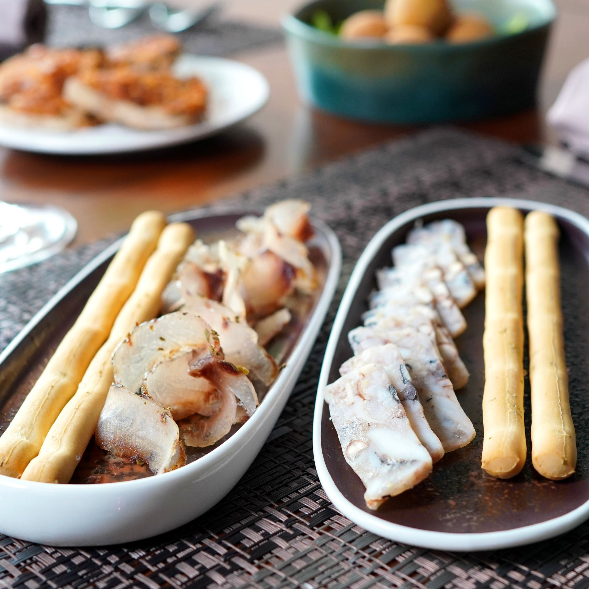
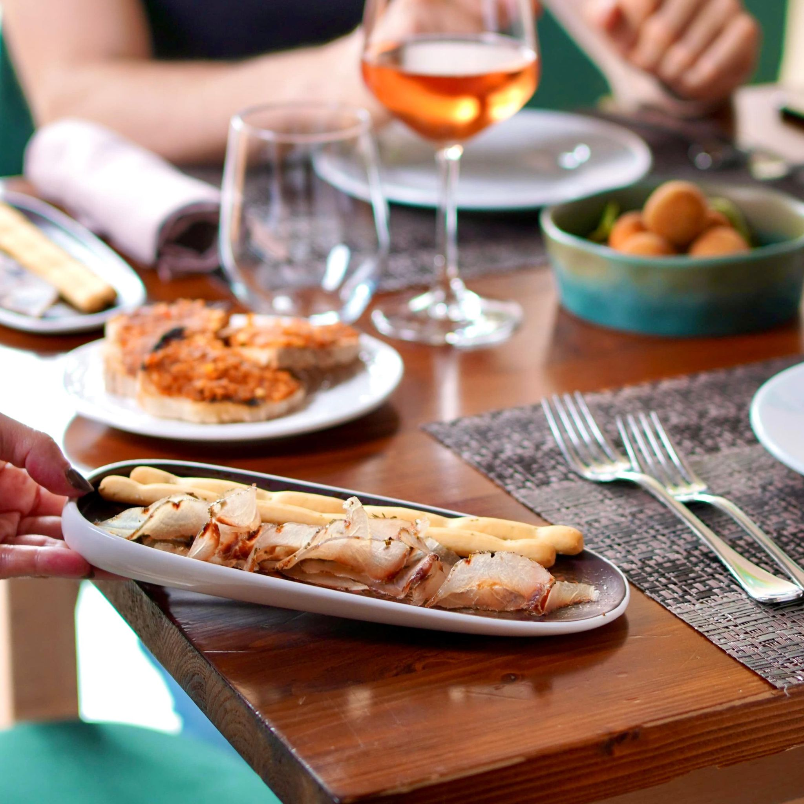
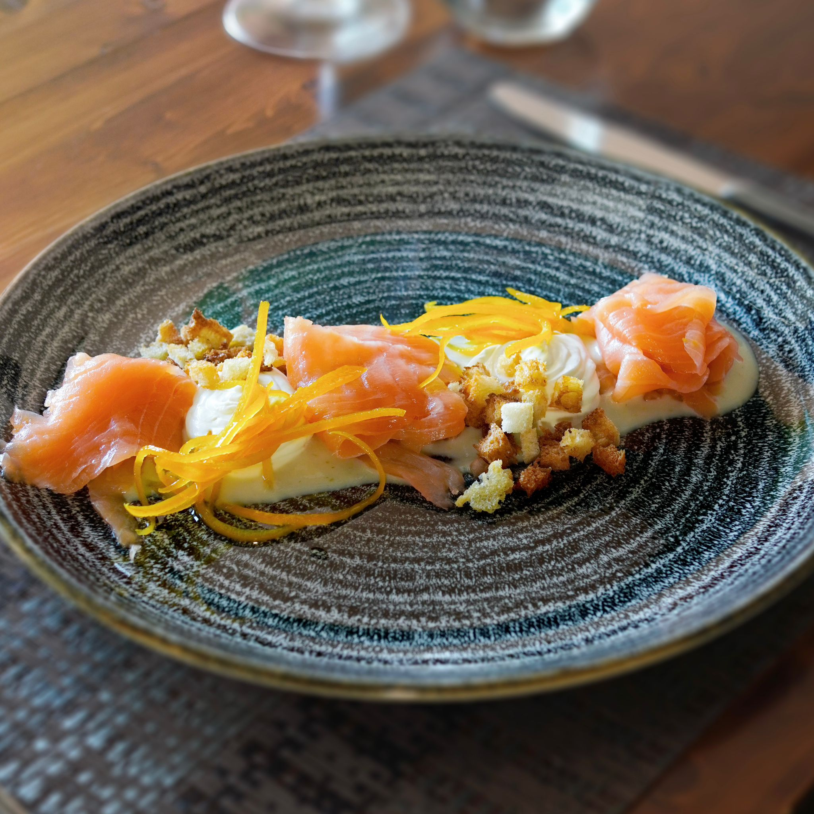
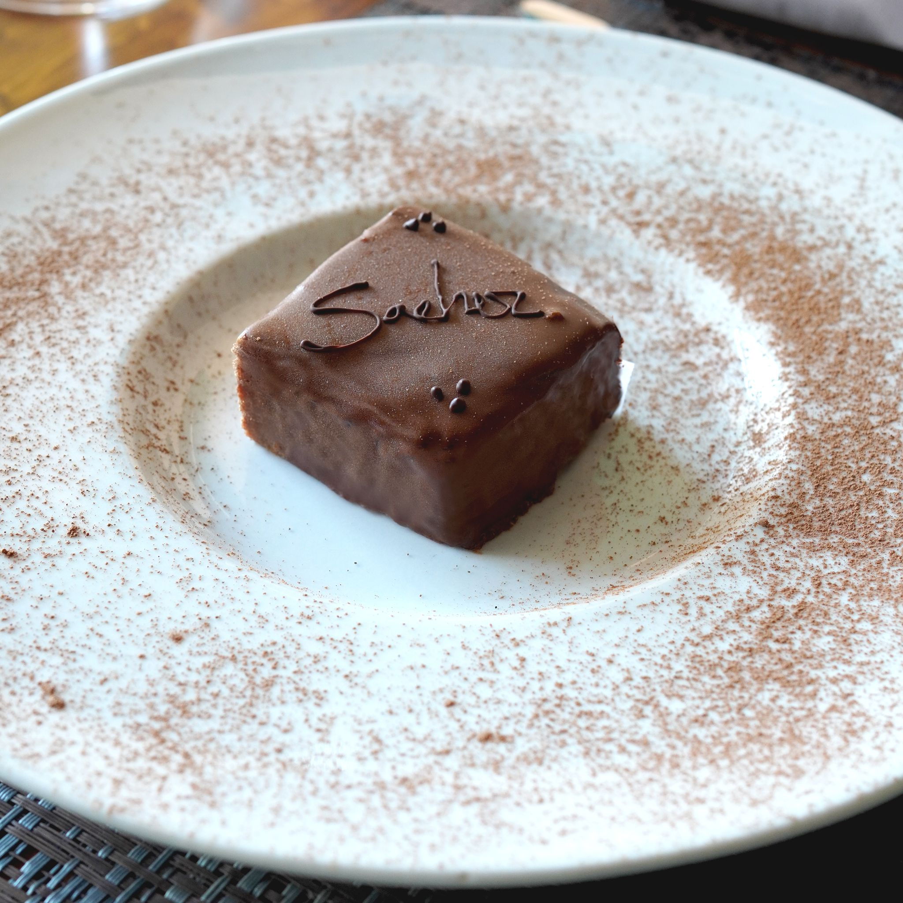
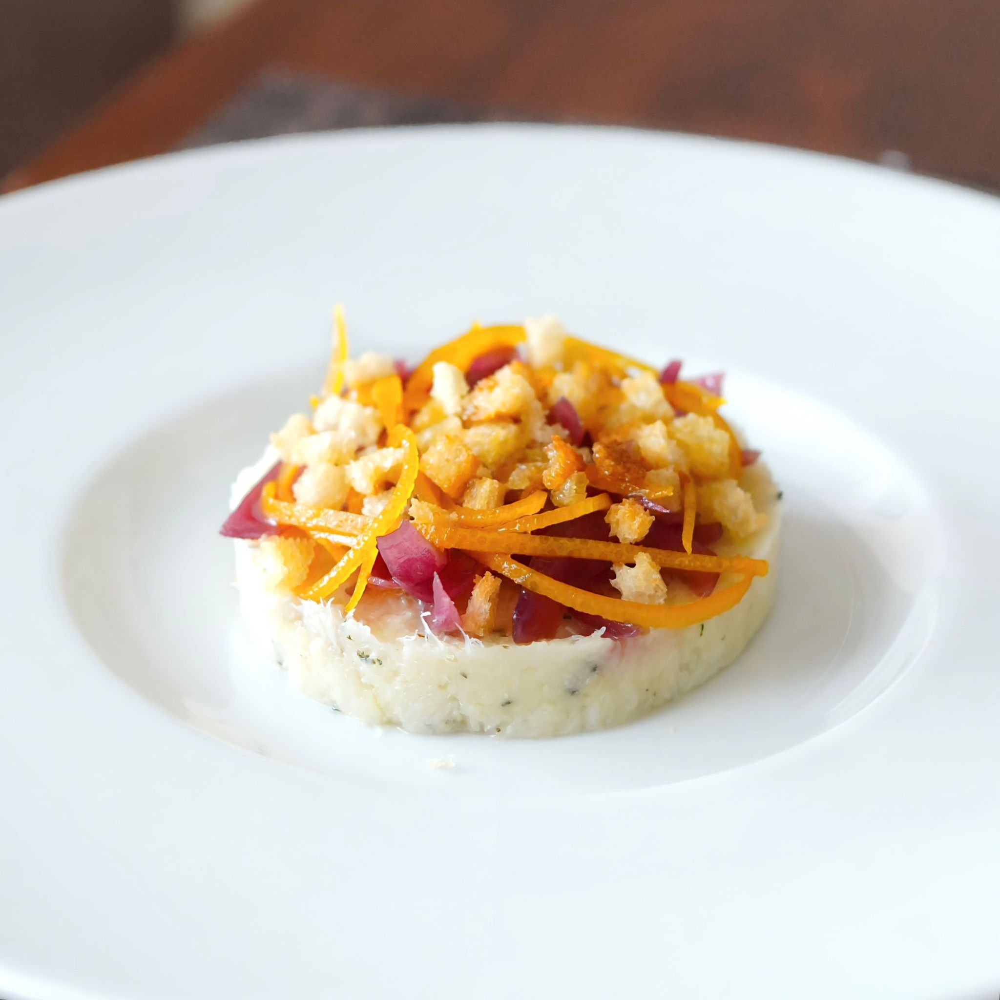
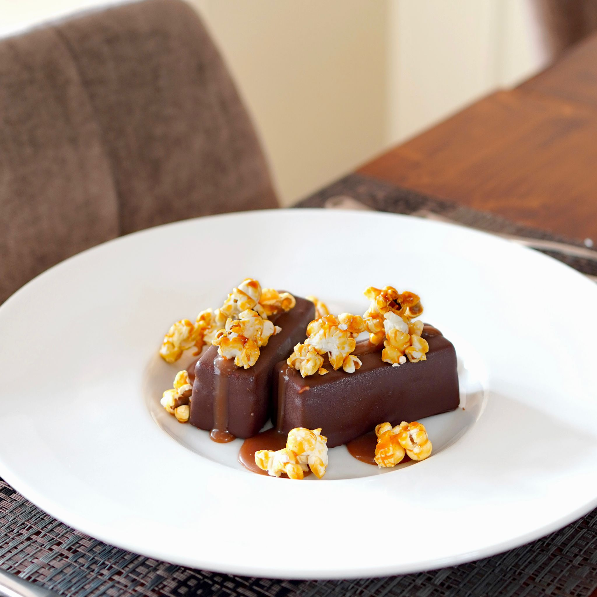

Il mare, reinventato
Una cucina di pesce con proposte vegetariane, dove ogni accostamento — dal kebab di tonno alle tagliatelle di seppia — nasce dalla ricerca.
Cucina creativa di mare · Frosinone · dal 2019
Una cucina di mare che gioca con accostamenti inediti, costruiti su una tecnica affinata nelle grandi cucine. Dove il sapore nasce dal sapere.
La nostra cucina
Tecnica stellata resa calore: il mare reinventato in piatti che sorprendono senza perdere le radici.
Una cucina di pesce con proposte vegetariane, dove ogni accostamento — dal kebab di tonno alle tagliatelle di seppia — nasce dalla ricerca.
Un ambiente raffinato ma accogliente: lo stesso piacere per una cena a due, una tavolata tra amici o una cena aziendale.
Una carta dei vini ricercata, scelta per dialogare con i piatti. Lasciatevi guidare all'abbinamento giusto.
La nostra storia
Sapore è Sapere nasce il 23 maggio 2019 dall'incontro tra lo chef Marco Taglione e la pasticcera e maître Marika Urbani: due percorsi tra cucine stellate e hotel di lusso, riuniti in un solo progetto nel cuore di Frosinone.
La cucina è di mare, con proposte vegetariane, e si accompagna a una carta di oltre cento etichette. Ogni piatto è il risultato di anni di studio trasformati in sapore — tecnica resa calore, creatività con un perché.

Menù Degustazione "Sapere"
€ 50
Un percorso pensato dallo chef Marco Taglione. Con degustazione vini in abbinamento, da 3 o 5 calici.
Dalla cucina
Una piccola anteprima della carta: pesce, creatività e abbinamenti inediti.





